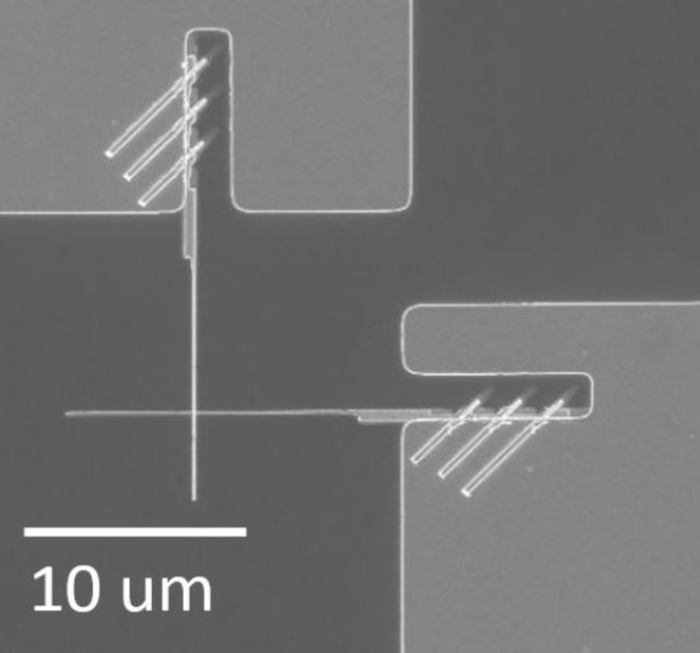
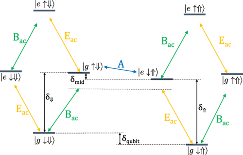

Site under construction

Finding critical points of neural network loss surfaces
Despite how common and useful neural networks are, there are still basic mysteries about how they work, many related to properties of their loss surfaces. In this project, led by Charles Frye, we tested Newton methods (common tools for optimization and exploring function structure) on loss surfaces. We found that, as opposed to finding critical points as designed, in practice Newton methods almost always converged to a different, spurious class of points which we described. Giving simple visualizable examples to illustrate the problem, we showed that some major studies using Newton methods on loss surfaces probably misinterpreted their results. Our paper is here.

Josephson junction fabrication
In the spring and summer of 2019 I worked in the lab of Prof. Per Delsing developing nanofabrication methods for Josephson junctions, ubiquitous components in superconducting circuitry. My main project was a study of how junctions age in the months after fabrication, but my biggest contribution was elsewhere: Anita Fadavi, Amr Osman and I developed a way to speed up junction fabrication by one lithography step, or potentially several days. A paper is forthcoming.

Quantum control of nuclear spin qubits
Qubits decohere and lose their quantum information when uncontrollably coupled to their environment. Nuclear spin qubits in silicon are extremely weakly coupled to their environment, giving them long coherence times (up to minutes), but that same weak coupling makes quickly controlling them difficult. Advised by Prof. Sophia Economou, I came up with schemes for driving nuclear spin qubits that give fast, noise-resistant arbitrary single-qubit gates. The most important gate is a long sweep that effectively turns uncertainty in electric field (charge noise) into uncertainty in time, which can be accounted for by corrective gates. We also show two-qubit gates. Our results are published here.
Puzzles
While a senior in undergrad, I started a puzzlehunt called the VT Hunt with Bennett Witcher. It became a university tradition, with the 2nd and 3rd VT Hunts each drawing ~2000 participants and raising money for charities. I've also helped concoct six other puzzle events starting with the TJ Hunt in high school. A few of my favorite puzzles I've made are below.
Adders Multiplying • Flags • Forest Son • Mining • Topology • Transit